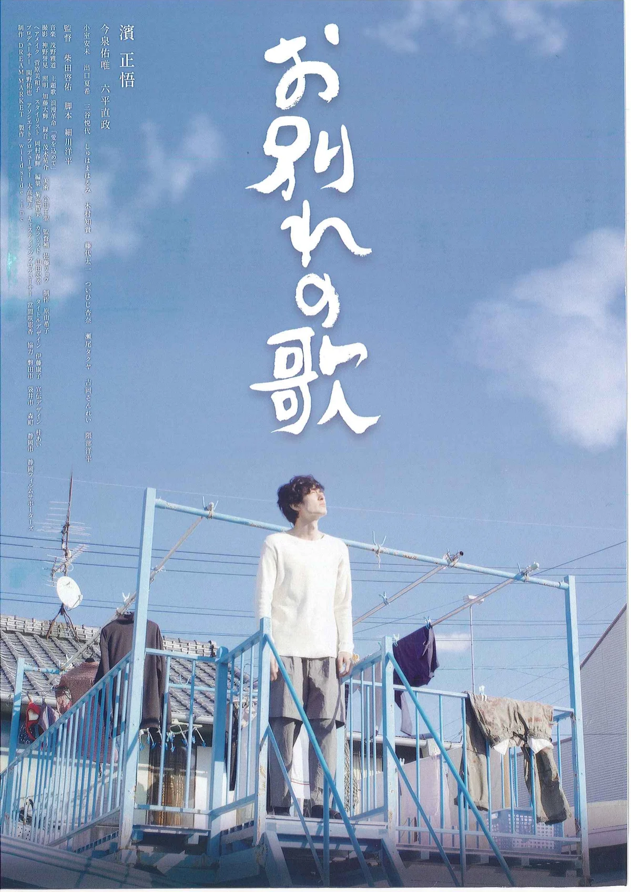
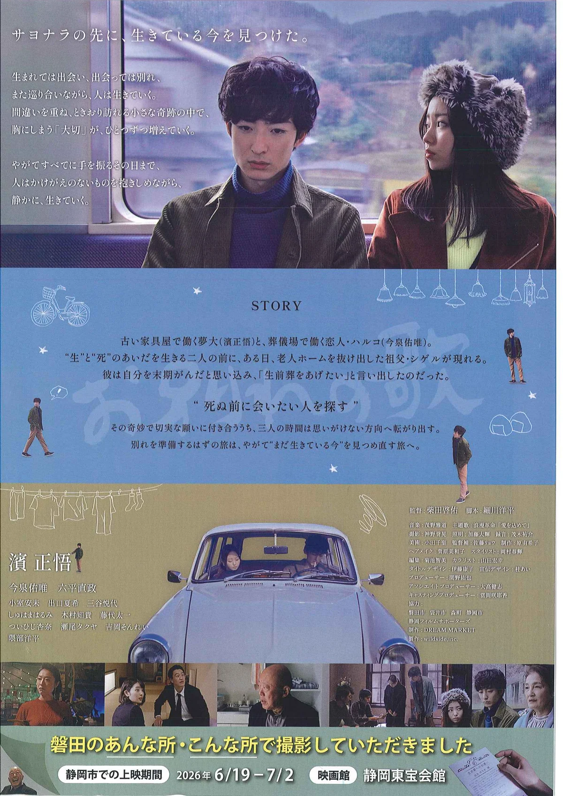

映画『お別れの歌』と磐田の風景
磐田の今が、映像として残されたことの価値
なぜ、磐田物語でこの映画を紹介するのか
磐田物語は、過去の資料だけを集める場所ではない。古い写真や古地図とならんで、いま現在の磐田の記憶もまた、残していくべきものだと考えている。
古写真や絵葉書が、百年を経て貴重な資料になったように、映画に映りこんだ現代の風景もまた、年月を重ねるほどに価値を持つ。何気ない道、見慣れた建物、いつもの店、まちの空気感、人の動き――そうしたものは、その時代を生きる人にとっては当たり前すぎて記録に残らない。だからこそ、映像のなかに偶然のように残された「今日」が、後の世代にとっては得がたい資料になる。
映画は文化作品であり、同時にまちの記録でもある。物語を語りながら、その背後で時代の姿を保存している。磐田物語がこの映画を取り上げるのは、そうした二重の価値に光をあてたいからである。
古写真が百年後の資料になるように、映画に映った今日の磐田もまた、未来の誰かにとって大切な記録になる。
映画『お別れの歌』について
『お別れの歌』は、“別れ”を描きながら、“まだ生きている今”を見つめ直す物語である。人生の節目、家族、記憶、旅、そして人と人とのつながりが、静かなユーモアと温度をもって描かれている。
本作は磐田市をはじめとする静岡県西部・中部の各地で撮影された。地域の風景のなかで物語が紡がれており、見慣れたまちが映像のなかに立ち上がってくる。
| 作品名 | 映画『お別れの歌』 |
|---|---|
| 監督 | 柴田啓佑 |
| 脚本 | 細川洋平 |
| 出演 | 濱正悟、今泉佑唯、六平直政 ほか |
| 撮影協力 | 磐田市、袋井市、森町、静岡市、静岡フィルムサポーターズ |
| 公式情報 | 映画『お別れの歌』公式サイト |
チラシで見る映画『お別れの歌』
今回、映画『お別れの歌』のチラシ表裏を、磐田物語の記録として掲載します。チラシそのものもまた、作品が公開された時代、上映された地域、そして磐田で撮影されたことを伝える資料です。
裏面には「磐田のあんな所・こんな所で撮影していただきました。」という趣旨の言葉が記されており、この映画が磐田の風景と結びついていることが、地域の記録としても読み取れます。チラシは、作品の内容を伝えるだけでなく、公開時期、上映地域、関係者、そして地域とのつながりを残す資料でもあります。


※チラシ画像は、掲載可能な資料として提供されたものを使用しています。公式ポスター、場面写真、俳優写真などを追加で使用する場合は、別途、権利者・関係者の許諾を確認します。
磐田の風景が映像に残るということ
映画に映る風景は、作品の背景であると同時に、その時代の地域記録でもある。物語のために選ばれた場所であっても、そこには撮影された日の磐田が、そのまま写し取られている。
何気ない場所ほど、後から価値が出る。店先のたたずまい、住宅の並び、道の幅、空の色、看板の文字、停まっている車、人々の服装、まちの余白――そうした細部こそが、時代の空気を伝える。意図して残そうとしたものではなく、自然に映りこんだものが、年月を経て資料になる。
映画は、地域の風景を「物語の記憶」として残す。磐田がロケ地として選ばれ、その姿が映像に刻まれたこと自体が、地域文化の一部として記録する価値を持っている。
人は映画の物語を観る。しかし、年月が経つと、そこに映っていた道や建物や空の色までもが、まちの記憶として立ち上がってくる。
撮影された磐田の場所について
磐田市内のどの場所が、どの場面に映っているのか。確認できた情報から、今後少しずつ整理していきます。現時点で確実に確認できていない場所については、断定を避け、わかったことだけを丁寧に書き留めていきます。
映画に映っている磐田市内の場所について、記憶や情報をお持ちの方がいらっしゃいましたら、ぜひ掲示板などからお知らせください。ただし、個人宅や私有地、営業中の店舗については、迷惑がかからない形で慎重に記録していきます。
映画をきっかけに、磐田の記憶を残す
映画を観た人が、見慣れた磐田の風景をもう一度見直す。そんなきっかけになれば、と思う。住む人にとっての日常は、外から見れば、すでに一つの文化である。映像作品のなかに置かれることで、当たり前だった風景が、語るべき記憶へと変わっていく。
この映画を入口に、磐田の古写真や地名、町並み、建物、暮らしの記憶へと、関心を広げていただけたら嬉しい。磐田物語のなかには、過去から現在までの磐田を読むための入口がいくつもある。
公式情報
作品の最新情報・上映スケジュールは、公式サイトをご確認ください。
上映情報は変更される場合があります。最新情報は公式サイトまたは各映画館の案内をご確認ください。
このページについて
このページは、映画『お別れの歌』を宣伝するためのものではない。磐田市内で撮影された映画を、「今の磐田が映像として残された文化的出来事」として記録するものである。
古写真や絵葉書が後の時代にとって貴重な資料になるように、映画の中に映った磐田の風景もまた、未来の磐田物語の一部になる。その価値を、静かに、丁寧に、磐田物語の中へ位置づけておきたい。
- 映画『お別れの歌』公式サイト（owakarenouta-movie.com）。
- 映画『お別れの歌』チラシ表裏（掲載可能な資料として提供されたもの）。
- 作品情報・撮影協力等は、上記公式情報および提供チラシの記載に基づく。上映時間など細部の表記は、最新の公式表記に委ねる。